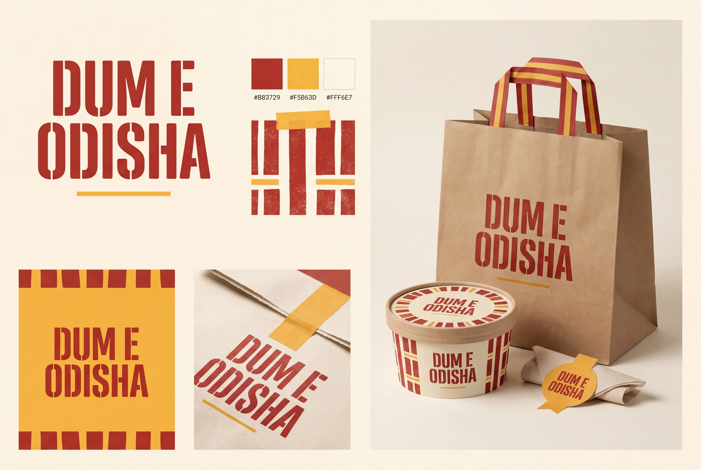

Food-brand explorations / 02
Dum Block
The full name becomes a solid typographic shape. Broad custom lettering and a measured rhythm of red and saffron stripes carry the identity across bags, tubs and signs.
Confident.
rhythmic, unmistakable.
The CHESINI, Mello, Sika and Chiso examples make type itself the memorable asset. The proposal uses its own letter construction, spacing and arrangement rather than reproducing those wordmarks.
The lettering is strong at distance, but the condensed counters and E separation need close checking at small sizes.

The identity, applied
A whole visual world.
The wordmark supplies the recognition; packaging geometry extends its weight and rhythm.


A small system, with a clear idea
What makes it
this direction.
- Graphic device
- Broad red fields and a disciplined stripe rhythm, always leaving a clean zone for order information.
- Typography behavior
- Custom heavy uppercase wordmark; compact neutral information text.
- Packaging direction
- Red-and-cream carriers, cream tubs, a restrained saffron sealing strip.
- Draft voice example
- “Big on flavour. Clear on the details.”
Why it belongs in this round.
The CHESINI, Mello, Sika and Chiso examples make type itself the memorable asset. The proposal uses its own letter construction, spacing and arrangement rather than reproducing those wordmarks.
The full business name remains Dum E Odisha. The route name describes a creative direction, not a proposed rename. This is a distinct alternative to compare with the current and script-led ideas.
Artwork is generated raster exploration, not an approved vector master or manufactured packaging. No recipe, ingredient sourcing, founding story or customer result is implied by the visual direction. Final selection, small-size refinement and production proofing remain separate steps.